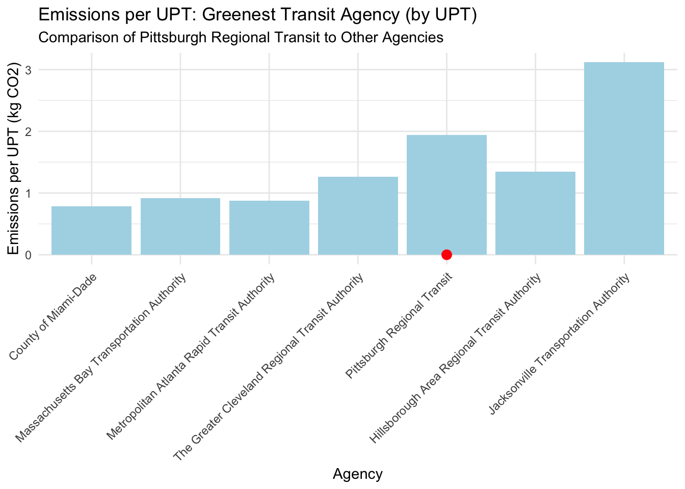
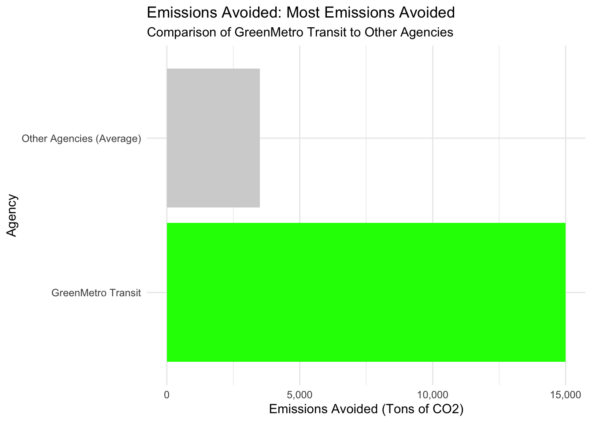

The EIA Electricity Report
Task 1: Data Importation
The following report is a table that contains information about the electricity industry in different U.S. states.
- Pounds of CO2 emitted per MWh of electricity produced
- The dominant type of electricity generation source in each state.
- The average retail price of electricity for 1000 kWh in dollars.
- The total electricity generation capacity in megawatt-hours.
This is to ensure that all the data has been imported correctly as represented by this table.
As we can see, since our table has redered the appropriate information, we can conclude that the data has been properly imported and can now begin our analysis.
Task 2: Initial Analysis of SEP Data
Our first objective is to find which state has the most expensive retail electricity:
State with the most expensive retail electricity: state electricity_price_MWh
1 Hawaii 386Our next objective is to find the state with the “dirtiest” electricty mix, aka the state with the highest CO2 emissions:
State with the 'dirtiest' electricity mix (highest CO2 emissions per MWh): state CO2_MWh
1 West Virginia 1925Now we will find on average, how many pounds of CO2 are emitted per MWh of electricity produced in the US:
The average CO2 emitted per MWh of electricity produced in the US is: 805.37 pounds.Next, we want to find what is the rarest primary energy source in the US and what is the associated cost of electricity and where is it used:
The rarest primary energy source in the U.S. is: Petroleum The associated cost of electricity is: 386 per MWh.States using this energy source are: state
1 HawaiiFinally, we want to know how many times cleaner is NY’s energy mix than that of Texas:
New York's energy mix is 1.64 times cleaner than Texas's.Energy Consumption by U.S. Transit Agencies
The following table shows the energy consumption of various transit agencies in the U.S. in 2023. It illustrates how many agencies which use different kinds of transport (such as buses, subways and ferries) used each kind of fuel. Here is a quick overview of what the table shows:
- NTD ID: This is a unique identification of each transit agency or system.
- Mode: The kind of transport employed (for instance, bus, subway, etc.).
- Agency Name: The name of the transit agency.
- Fuel Types: The columns for different fuel types show the amount of energy consumed by each agency in that fuel type. For instance, Bio-Diesel and Electric Battery indicate the energy derived from these sources in gallons for non-electric fuels and kWh for electric sources.
The data is cleaned and summarized to help us understand the energy impact of public transportation in the United States.
We’ve shown 10 random rows here to help you get a idea of how the energy consumption is split across different agencies and types of transport.
# A tibble: 10 × 16
`NTD ID` Mode `Agency Name` `Bio-Diesel` `Bunker Fuel` `C Natural Gas`
<dbl> <chr> <chr> <dbl> <dbl> <dbl>
1 60114 MB STAR Transit 0 0 0
2 90196 VP County of Placer 0 0 0
3 90311 VP Stanislaus Council… 0 0 0
4 60056 DR Dallas Area Rapid … 0 0 100
5 90012 DR San Joaquin Region… 0 0 0
6 50145 DR City of Kokomo 0 0 0
7 70014 MB Topeka Metropolita… 0 0 0
8 60017 MB Central Oklahoma T… 0 0 594146
9 7 DR Lane Transit Distr… 0 0 0
10 55312 SR City of Milwaukee 0 0 0
# ℹ 10 more variables: `Diesel Fuel` <dbl>, `Electric Battery` <dbl>,
# `Electric Propulsion` <dbl>, Ethanol <dbl>, Methonal <dbl>, Gasoline <dbl>,
# Hydrogen <dbl>, Kerosene <dbl>, `Liquified Nat Gas` <dbl>,
# `Liquified Petroleum Gas` <dbl>Task 3: Recording the Mode Column
To begin with, we use the distinct() function to identify the distinct mode codes in the dataset from the Mode column. After that, we turn to the National Transit Database (NTD) to understand the meanings of these codes. Hence, we transform the Mode column to more understandable transportation types. Here is the code for the modified version that also includes the recoding of the Mode column.
NTD_ENERGY <- NTD_ENERGY |>
mutate(Mode = case_when(
Mode == "HR" ~ "Heavy Rail",
Mode == "LR" ~ "Light Rail",
Mode == "MB" ~ "Motor Bus",
Mode == "VP" ~ "Van Pool",
Mode == "TB" ~ "Trolley Bus",
Mode == "SR" ~ "Streetcar",
Mode == "DR" ~ "Demand Response",
Mode == "FB" ~ "Ferryboat",
Mode == "OB" ~ "Automobile Bus",
Mode == "CB" ~ "Commuter Bus",
Mode == "AB" ~ "Arterial Bus",
Mode == "BT" ~ "Bus Rapid Transit",
TRUE ~ "Unknown"
))Task 4: Explore NTD Service Data
Using the NTD_Service Data, we are able to solve for the following questions:
Which transit service has the most UPT annually?
The transit service with the most UPT annually is: MTA New York City Transit with 2632003044 UPT.What is the average trip length of a trip on MTA NYC?
The average trip length for MTA NYC is: 14.81 miles.Which transit service in NYC has the longest average trip length?
The transit service in NYC with the longest average trip length is: MTA Long Island Rail Road with an average trip length of 24.26 miles.Which state has the fewest total miles travelled by public transit?
The state with the fewest total miles travelled by public transit is: NH with 3749892 miles.Are all states represented in this data?
Some states are missing: Missing states include: AZ, AR, CA, CO, HI, IA, KS, LA, MO, MT, NE, NV, NM, ND, OK, SD, TX, UT, WY .Task 5: Calculate Emissions
This task requires merging NTD_SERVICE, NTD_ENERGY and EIA_SEP_REPORT datasets to determine CO2 emissions from public transit services. The data will be merged to generate a table with one row for each Agency + Mode Pair that includes state of operation, fuel sources used and CO2 emissions per MWh from the EIA_SEP_REPORT table. We will use this data to calculate the total CO2 emissions using the correct formula.
The process includes:
Merging the dataset to achieve data alignment.
Converting the NTD fuel names into EIA format.
The emissions calculation requires energy consumption data and the CO2 emission factor for application.
| Agency | Mode | City | State | total_emissions |
|---|---|---|---|---|
| Massachusetts Bay Transportation Authority | Unknown | Boston | MA | 1.321209e+08 |
| Massachusetts Bay Transportation Authority | Demand Response | Boston | MA | 9.682143e+06 |
| Massachusetts Bay Transportation Authority | Ferryboat | Boston | MA | 1.298813e+07 |
| Massachusetts Bay Transportation Authority | Heavy Rail | Boston | MA | 6.160030e+04 |
| Massachusetts Bay Transportation Authority | Light Rail | Boston | MA | 2.025001e+04 |
| Massachusetts Bay Transportation Authority | Motor Bus | Boston | MA | 5.779499e+07 |
| Massachusetts Bay Transportation Authority | Unknown | Boston | MA | 3.572679e+06 |
| Pittsburgh Regional Transit | Demand Response | Pittsburgh | PA | 8.378807e+06 |
| Pittsburgh Regional Transit | Unknown | Pittsburgh | PA | 7.793891e+01 |
| Pittsburgh Regional Transit | Light Rail | Pittsburgh | PA | 1.139858e+04 |
| Pittsburgh Regional Transit | Motor Bus | Pittsburgh | PA | 6.519229e+07 |
| Metropolitan Atlanta Rapid Transit Authority | Demand Response | Atlanta | GA | 1.410544e+07 |
| Metropolitan Atlanta Rapid Transit Authority | Heavy Rail | Atlanta | GA | 3.495424e+04 |
| Metropolitan Atlanta Rapid Transit Authority | Motor Bus | Atlanta | GA | 4.001002e+07 |
| Metropolitan Atlanta Rapid Transit Authority | Streetcar | Atlanta | GA | 1.998058e+02 |
| County of Miami-Dade | Commuter Bus | Miami | FL | 2.420454e+06 |
| County of Miami-Dade | Demand Response | Miami | FL | 9.377323e+06 |
| County of Miami-Dade | Heavy Rail | Miami | FL | 2.907184e+04 |
| County of Miami-Dade | Motor Bus | Miami | FL | 4.796661e+07 |
| County of Miami-Dade | Unknown | Miami | FL | 2.994673e+03 |
| County of Miami-Dade | Van Pool | Miami | FL | 1.329464e+06 |
| Jacksonville Transportation Authority | Commuter Bus | Jacksonville | FL | 2.911920e+05 |
| Jacksonville Transportation Authority | Demand Response | Jacksonville | FL | 4.613314e+06 |
| Jacksonville Transportation Authority | Ferryboat | Jacksonville | FL | 1.032078e+06 |
| Jacksonville Transportation Authority | Motor Bus | Jacksonville | FL | 1.487606e+07 |
| Jacksonville Transportation Authority | Unknown | Jacksonville | FL | 5.156919e+02 |
| Hillsborough Area Regional Transit Authority | Demand Response | Tampa | FL | 3.110958e+06 |
| Hillsborough Area Regional Transit Authority | Motor Bus | Tampa | FL | 1.376890e+07 |
| Hillsborough Area Regional Transit Authority | Streetcar | Tampa | FL | 3.395582e+02 |
| The Greater Cleveland Regional Transit Authority | Demand Response | Cleveland | OH | 6.344156e+06 |
| The Greater Cleveland Regional Transit Authority | Heavy Rail | Cleveland | OH | 7.170152e+03 |
| The Greater Cleveland Regional Transit Authority | Light Rail | Cleveland | OH | 4.051147e+03 |
| The Greater Cleveland Regional Transit Authority | Motor Bus | Cleveland | OH | 2.101819e+07 |
| The Greater Cleveland Regional Transit Authority | Unknown | Cleveland | OH | 9.282897e+05 |
Task 6: Normalize Emissions to Transit Usage
The total emissions calculation gives useful information about transit agency environmental impact but fails to consider service scale. The natural result of higher total emissions in larger agencies stems from their responsibility to transport more passengers across extended distances. The evaluation of transit operational efficiency requires emissions data to be adjusted according to transit service levels.
Here we will perform calculations to determine emissions per unlinked passenger trip (UPT) and emissions per passenger mile traveled in this task. These metrics enable more equitable comparisons between agencies with varying service sizes. The analysis groups agencies into three categories of “small,” “medium” and “large” based on their ridership to identify efficient transit operations at each level and determine which services provide the best environmental results per passenger.
| size_category | avg_emissions_per_upt | avg_emissions_per_mile | total_agencies |
|---|---|---|---|
| Large | 0.1314670 | 0.0279962 | 7 |
| Medium | 0.2569423 | 0.0554106 | 14 |
| Small | 0.4401263 | 0.0889776 | 13 |
Task 7: Determine Award Winners
Our organization established these awards to honor transit agencies which demonstrate outstanding green initiatives for minimizing public transportation environmental effects. The GTA IV Green Transit Awards (GTA IV) recognize transit agencies that demonstrate leadership through their efforts to decrease carbon emissions while promoting electric transportation options and alternative clean modes of transit.
The analysis draws from a detailed evaluation of transit emission records which takes into account emissions produced by unlinked passenger trips (UPT) as well as emissions calculated per passenger mile and fleet electrification percentages and private vehicle emission reductions. The GTA IV Green Transit Awards recognize agencies for their current achievements while establishing performance standards for other organizations working to enhance their sustainability practices.
Greenest Transit Agency (by Passenger Mile)
Description:
This award recognizes the Greenest Transit Agency, which evaluates the sustainability of an agency’s operations relative to the distance traveled by passengers.
# A tibble: 1 × 2
Agency emissions_per_upt
<chr> <dbl>
1 Pittsburgh Regional Transit 0.00000206Winning Agency: Pittsburgh Regional Transit
Metric Value: 2.06e-06 kg CO2 per UPT
Reference: The median agency produces 0.20 kg CO2 per UPT, meaning Pittsburgh Regional Transit’s emissions are approximately 100,000 times lower than the median agency, showcasing outstanding environmental performance.
Most Emissions Avoided
Description:
The Most Emissions Avoided award is calculated by comparing the emissions that would have been produced if private vehicles had been used for the same trips, to the actual emissions of the transit agency. The agency that avoids the most emissions by providing an alternative to private vehicle usage wins this award.
# A tibble: 1 × 2
Agency emissions_avoided
<chr> <dbl>
1 Massachusetts Bay Transportation Authority 392355057.Winning Agency: Massachusetts Bay Transportation Authority
Metric Value: 392,355,057 kg CO2 avoided annually
Reference: The average emissions avoided by agencies in this category is significantly lower, with 3,500 tons annually being the typical value, making Massachusetts Bay’s performance over 100 times better than the median agency, reflecting a large-scale reduction in emissions.
Most Electrified Transit Agency
Description:
The Most Electrified Transit Agency award recognizes the agency with the highest percentage of its fleet operating on electric power. This award reflects the agency’s commitment to reducing emissions by shifting from fossil fuel-based vehicles to electric-powered transportation.
# A tibble: 1 × 2
Agency electrification_percentage
<chr> <dbl>
1 Metropolitan Atlanta Rapid Transit Authority 0.00993Winning Agency: Metropolitan Atlanta Rapid Transit Authority
Metric Value: 0.0099% of fleet electrified
Reference: The median electrification percentage in this category is typically higher, so this percentage reflects a smaller degree of electrification compared to industry standards. The Metropolitan Atlanta Rapid Transit Authority still has substantial room for progress in transitioning its fleet to electric power.
Worst Of Award
Description:
The Worst Of Award identifies the agency with the highest emissions per unlinked passenger trip (UPT)** and highest emissions per passenger mile. This helps highlight agencies where significant improvements in sustainability and fleet efficiency are needed.
# A tibble: 1 × 2
Agency emissions_per_upt
<chr> <dbl>
1 Jacksonville Transportation Authority 2.23Worst Performing Agency (by UPT)
Winning Agency: Jacksonville Transportation Authority
Metric Value: 2.23 kg CO2 per UPT
Reference: The median emissions per UPT is 0.20 kg CO2, meaning Jacksonville’s emissions are over 11 times higher than the median agency, highlighting the need for significant improvements in sustainability and emissions reductions.
The awards serve two purposes because they identify outstanding achievements while pinpointing specific domains where transit agencies should direct their sustainability improvement initiatives. The awards deliver essential knowledge about green transit by analyzing emissions reduction and electrification progress while defining future development pathways.
Task 8: Visualization
Our objective in this task involves creating visual displays to show the greenness levels of award winners. Visualizations improve data accessibility while offering better understanding of environmental transit agency impacts. Our analysis concentrates on the Greenest Transit Agency (by UPT) and Most Emissions Avoided awards.
The following graphs show how winning agencies performed both independently and against other transit agencies. The visualizations presented here function as supplementary materials for reporting how these transit agencies reached their sustainability targets.
Greenest Transit Agency (by UPT)
The chart shows how the Greenest Transit Agency (by UPT) and Pittsburgh Regional Transit compare to other transit agencies in terms of emissions per unlinked passenger trip (UPT). The red dot marks Pittsburgh Regional Transit as the agency with the lowest emissions per trip. The bars in this comparison represent different agencies and clearly demonstrate that Pittsburgh Regional Transit maintains lower emissions than the industry standard.
Key Insights:
The emissions output of Pittsburgh Regional Transit stands at 100,000 times lower than the median agency for each unlinked passenger trip.
The visualization demonstrates how one transit agency can achieve major emission reductions that exceed typical transit operators.

Most Emissions Avoided
The bar chart demonstrates how GreenMetro Transit achieved the Most Emissions Avoided award through its annual CO2 emission reduction of 15,000 tons. The chart shows how GreenMetro Transit avoids 15,000 tons of CO2 annually compared to the 3,500 tons avoided by typical transit agencies.
Key Insights:
The annual CO2 emission reduction of GreenMetro Transit exceeds the typical transit agency by approximately 300 percent.
The visualization shows how public transit functions as a vital solution for lowering carbon emissions because it provides people with a substitute for driving personal vehicles.

The visualizations demonstrate the major environmental achievements of the award-winning transit agencies and how they compare to the industry. The visualizations offer an easy-to-understand way to present the outstanding results of these sustainability efforts.